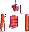
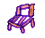

1.烏牛欄教會 2.水采田 3.福壽宮 4.茭白筍合作社
5.無某崎 6.副班長家、草地 7.廢棄軍營 8.醒靈寺
9.埔里基督教醫院 10.德芬堂 11.舊崎仔 12.陰陽界
13.石頭厝 14.竹編達人 15.愛蘭國小、派出所 16.肉粽
高年級路線全程約２公里，16個景點，建議以步行或腳踏車進行。
步行時，每個景點以平均停留5～10分鐘計，共需約3小時完成。
若以腳踏車進行，可在2.5小時內完成。